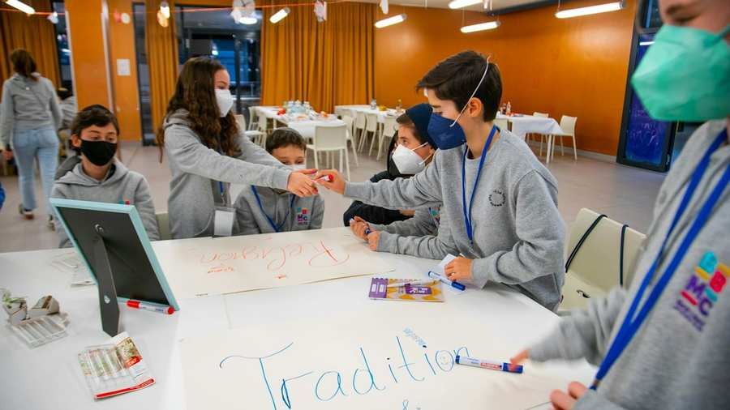

Mitte Februar fand die zweite Einheit des BBMC-Clubs statt. Dieses Mal standen die Themen Kaschrut & Shabbat auf dem Programm. Gemeinsam mit Michal Grünberger entdeckten die Bar und Bat Mitzwah Boys und Girls den Zauber und die Besonderheiten des Shabbats und backten Challot.
Ein weiteres Highlight gab es mit Oberrabbiner Jaron Engelmayer und Gemeinderabbiner Schlomo Hofmeister. Mit echten Federn und Tinte durften die Jugendlichen gemeinsam mit den Rabbinern die Kunst des Thoraschreibens und der Kalligrafie anhand von einfachen Beispielen ausprobieren. Als musikalischen Abschluss übten die BBMC Boys und Girls mit Oberkantor Shmuel Barzilai Smires und Lieder für den Shabbat, den sie gemeinsam verbrachten und an dem sie auch am G‘ttesdienst teilnahmen.
Kick-Off für den ersten Bar-und Bat-Mitzwah-Club-Jahrgang
Am 23. Jänner fand das Kick-Off-Event unseres ersten Bar- und Bat-Mitzwah-Club-Jahrgangs statt. In entspannter Atmosphäre, mit Fun Activities und lustigen Ice Breakern konnten sich die Teilnehmerinnen und Teilnehmer kennenlernen. Oberrabbiner Jaron Engelmayer begrüßte die Bar und Bat Mitzwah Boys and Girls und füllte gemeinsam mit ihnen die ersten Seiten ihres Booklets aus. So wurden die jüdischen Geburtstage und Paraschot erkundet.
Charity ist ein wichtiger Teil der jüdischen Gemeinde und des BBMC Programms. Die Wizo stellte einige gemeinnützige jüdische Organisationen vor und ermutigte die Jugendlichen, sich kreative Spendenaktionen zu überlegen, um so etwas Gutes für die Community zu tun. Eines sei verraten: Die Jugendlichen haben Großes vor – mehr dazu bald! Anschließend startete das Modul „Judentum und Zionismus“. Beim ersten Brainstorming wurde schnell klar, dass vor allem Tradition und das Gemeindeleben einen großen Stellenwert im Leben der jungen Generationen einnimmt. Mit interaktivem und spielerischem Programm erkundeten die Teilnehmenden Themen wie „Mein Judentum, jüdischer Alltag und Israel“.
Oberrabbiner Engelmayer erwähnte in seiner Begrüßung die Parascha „Lech Lecha“ und beschrieb den neuen Weg, den die Bar und Bat Mitzwah Boys und Girls im kommenden Jahr gemeinsam gehen werden – in diesem Sinne, freut sich die JUKO, auch Teil dieser Reise zu sein und die Teilnehmer und Teilnehmerinnen begleiten zu dürfen. Danke an alle BBMC Boys und Girls – es ist ein toller erster Jahrgang. Die JUKO bedankt sich an dieser Stelle auch beim Rabbinat, der Wizo und allen Unterstützerinnen und Unterstützern für die gute Zusammenarbeit und ihren Einsatz.